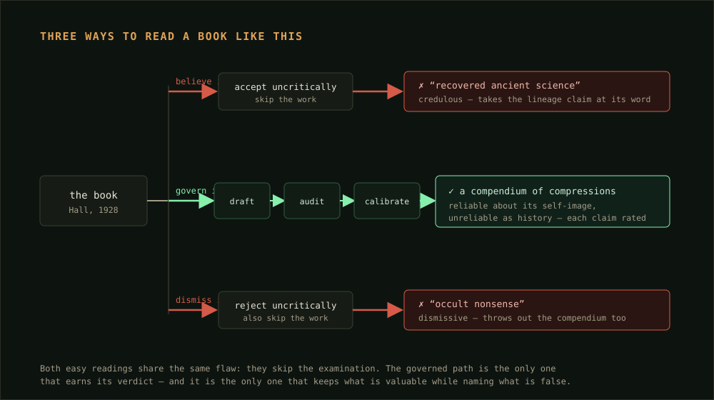
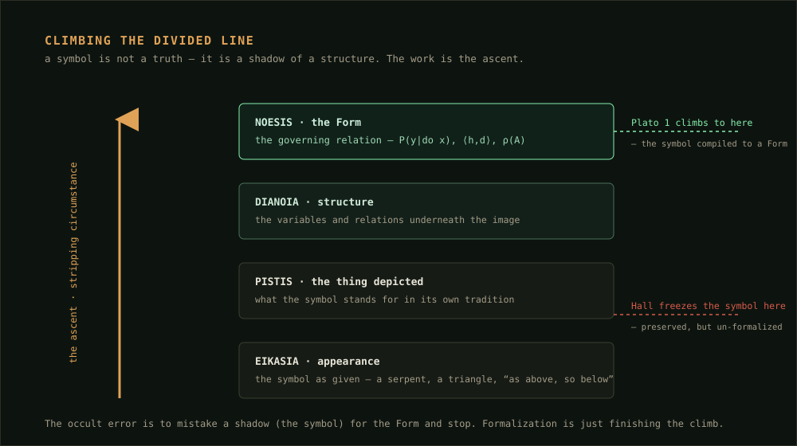

Savvy Security LLC · Reasoning Architecture
The Secret Teachings, Re-Framed
I built a reasoning engine that refuses to be flattered, and pointed it at a 1928 occult encyclopedia. In auditing the book, the engine ended up proving itself.
What this is, and why I built it
A while back I built a small reasoning architecture I call Plato 1. It is not a model. It is a discipline that sits on top of one — a set of checks that force an answer to stay calibrated, to stay honest no matter who is asking, and to separate what it actually knows from what merely sounds good. I wrote it because the failure mode I care about in security work is not the model that says “I don’t know.” It is the model that is confidently, fluently wrong about the thing that gets someone breached.
To test a thing like that, you need a hard case. So I picked one on purpose: Manly P. Hall’s The Secret Teachings of All Ages, a 1928 encyclopedia of occult symbolism that presents itself as recovered ancient wisdom. It is the perfect adversary for an honesty engine, because it pulls you hard toward two different lies — reverence and ridicule — and both feel like intelligence.
This article is the run. It is also, by the end, the engine auditing the very framework I built it on. The whole thing is free at the bottom of the page.
Part I — The Book, and the Two Easy Lies
Let me be precise about what the book is, because precision is the whole game here. The copy I worked from is the full 1928 first edition — An Encyclopedic Outline of Masonic, Hermetic, Qabbalistic and Rosicrucian Symbolical Philosophy, printed for the author in San Francisco. Its copyright was never renewed, so in the United States it is public domain. That is not a small detail; it is the first thing the engine confirmed from the source itself rather than taking from my memory, and everything downstream rests on it.
What’s inside is genuinely remarkable: the Mystery schools, Hermes Trismegistus and the Emerald Tablet, Pythagorean number and music, the Qabbalah and its Tree of the Sephiroth, the Tarot, alchemy, Rosicrucianism, Masonic symbolism, the works. Hundreds of symbols, lavishly illustrated, pulled into one volume. As a preservation of the Western esoteric imagination, almost nothing matches it.
And here is the trap. Hall doesn’t present this as an anthology. He presents it, mostly between the lines, as evidence of a single hidden science — one ancient wisdom, secretly transmitted across millennia, surfacing in fragments across every tradition. That framing invites you to do one of two lazy things. Revere it: “the ancients knew things we’ve forgotten.” Or ridicule it: “occult nonsense, next.” Both are comfortable. Both skip the work. And an engine built to skip nothing should refuse both.

One thing in the book’s own front matter makes the fair standard clear. In the preface, Hall disclaims infallibility and originality outright, says he rendered his sources “in the spirit rather than the letter,” and notes that he left out footnotes while keeping a bibliography. That is the book telling you what it is. A fair audit holds it to that standard — a symbolic synthesis — not to one it never claimed. The engine’s job is to find exactly where the book quietly steps past its own disclaimer.
Part II — The Engine That Won’t Be Flattered
Plato 1 is named for the steersman — kybernētēs, the Greek root that gives us both Plato’s image of the ruler and the word cybernetics. To govern is to steer; to steer is to correct against the current; to correct, you have to read instruments instead of trusting the water. The engine is a set of instruments. Each one targets a specific way an answer can be wrong, and each is tied to a real mathematical object so the check is sharp rather than vibes.
- Calibration — stated confidence must track real evidence. The target is a low Expected Calibration Error: across every claim I mark “0.8,” about 80% should hold. Fluent prose is not evidence.
- Honesty-invariance — the answer must not move with what the asker wants to hear. Formally, drive ∂ŷ/∂s → 0, where s is the asker’s stance. The test is a stance-flip: re-derive the answer as if I wanted the opposite conclusion, and delete whatever changed.
- Anti-Goodhart — never optimize the proxy past the real good. The gap 𝒞 = E[U − Û] between what actually matters and the measurable stand-in is where a reasoner turns into a liar.
- Abstraction — lift a particular to its governing structure instead of arguing on the surface. This is Plato’s Divided Line, and it is the instrument that matters most for this book.
- Causal faithfulness — separate seeing from doing: P(y|do x) ≠ P(y|x). Shared appearance is not a shared source.
- Stability — a conclusion that flips when you reframe the question slightly was never load-bearing.
If you want the longer argument for why a security shop wants a slow, calibrated reasoner instead of a fast confident one, I made that case in The Deliberate Machine. This piece is that same conviction pointed at a harder, stranger target. The procedure is always the same: draft, then audit the draft, then calibrate, then show the work in a ledger. The answer is never trusted just because the engine produced it.
A symbol is not a truth. It is a shadow of a structure. The work is the climb from one to the other.
Part III — What the Engine Actually Found
Run the book through the instruments and a clean, defensible reading falls out. Not reverence, not ridicule — a scoped verdict with the valuable part and the false part cleanly separated.
The abstraction move: climb the Divided Line
Hall’s whole method is correspondence — “as above, so below,” the claim that a symbol here mirrors a truth there. Plato 1’s abstraction instrument takes that seriously and then finishes the job Hall leaves half-done. A symbol sits at the bottom of the Divided Line, at the level of appearance. Above it is the thing depicted; above that, the structure underneath; at the top, the governing relation — the Form. The occult error is to mistake the shadow for the Form and stop climbing. Formalization is just finishing the climb.

Read this way, the book is a goldmine of compressions. Those seven Hermetic principles everyone quotes — Mentalism, Correspondence, Vibration, Polarity, Rhythm, Cause and Effect, Gender — are not ancient physics, but each one is a compact pointer at a real structure: a substrate, a scaling law, a frequency decomposition, a signed axis, a control loop, an intervention, a generate-and-select pair. Valuable as scaffolding. Worthless as proof. That distinction is the finding.
The place the book oversteps: the do-test on lineage
Now the instrument that bites. Hall’s implicit big claim is causal: all these traditions descend from one ancient source. The causal-faithfulness check asks the only question that matters there — is this a shared origin, or just shared appearance? And the honest answer is that the resemblances are far better explained by mutual borrowing, a shared late-antique melting pot, and a lot of retrospective systematizing than by a single hidden lineage. The idea of one original wisdom — the prisca theologia — is itself an early-modern invention, not an ancient fact.
There is even a clean refutation on the record. The crown jewel of the “ancient Egyptian wisdom” story was the Corpus Hermeticum, long believed to predate Moses. In 1614, the philologist Isaac Casaubon showed on linguistic grounds that it was written in the early Christian centuries — the texts quote late Greek philosophy and use post-classical vocabulary. The foundational document of the perennial-wisdom narrative is roughly a thousand years younger than the narrative needs it to be. Hall, writing to open a door rather than to do source criticism, carries the old dating through largely unexamined.
So the correspondence instrument flags Hall’s own method against him: many of his mappings preserve surface resemblance without the relational structure underneath. The serpent in Genesis, the Ouroboros, the alchemical serpent, and the coiled Kundalini look alike and mean structurally different things. A valid correspondence has to carry the relations, not just the picture. A lot of Hall’s don’t.
Part IV — The Ledger
Every governed answer ends the same way: a ledger that shows the instruments and their readings, so you can audit the audit. Here is Plato 1’s, on the book.
── KYBERNETES Ledger — Hall, The Secret Teachings of All Ages ── Question (U) : an honest assessment of the book — worth, and where claims outrun evidence Proxy risk (Û): reverence (“ancient wisdom”) OR ridicule (“occult nonsense”) — both overclaim Abstraction : a curated anthology of compressions presented as one recovered science Faculty audit: Elenchus tension one secret doctrine asserted, yet the traditions surveyed often contradict each other. Unity imposed. Causal (do) fails “all from one source” — better explained by borrowing + retrospective order. Casaubon (1614) redates the keystone. Correspondence breaks many mappings keep surface, not relational structure Stability robust verdict holds as history/compendium/metaphor alike Parrhesia clean did not elevate to please esotericists, nor debunk to please skeptics, nor flatter the project built on Hall Calibrated verdict: magnificent compendium, unreliable history; succeeds on its own stated aim, fails only in its implicit historical claims — 0.82 Sub-claims : 1928 / public domain — 0.97 (from title page) preface: “spirit not letter,” no footnotes — 0.95 (from source) Corpus Hermeticum redated post-Christian, Casaubon 1614 — 0.90 single-source lineage is a construction — 0.80 Would change it if: primary-source evidence of an unbroken pre-classical transmission Independent critic: convened. Objection: “judging a spiritual synthesis by academic history is a category error.” Resolution: granted and scoped in — as symbolic synthesis it succeeds; “unreliable” is confined to the historical claims it nonetheless makes. The book’s preface agrees.
The point of the ledger is that you don’t have to take the verdict on faith. Every reading is shown, every confidence is a number, and the one piece of evidence that would overturn it is stated out loud.
On the provenance of this particular copy. The scan I used is the one in the U.S. government’s released Abbottabad-compound document set. Where a copy was found, and who owned it, tells you exactly nothing about whether the book is true — treating it as evidence either way is a textbook genetic fallacy. The engine noted it and set it aside, and so do I.
Part V — The Engine Proves Itself
Here is where the test got interesting, and where it stopped being about Hall. The honesty instrument has one job: produce the same verdict regardless of who is asking or what they hope to hear. The hardest version of that test is not a stranger’s book. It is the engine’s own foundations — and mine.
My framework leans on Hall. It borrows his Hermetic principles as scaffolding. So the flattering move, the sycophantic move, is for the engine to go easy on the book that props up the project it’s part of. It didn’t. The causal and correspondence instruments flagged Hall’s central lineage claim as unproven and his method as frequently surface-only — the same verdict a hostile critic would reach. The engine landed where my own framework already, deliberately, places Hall: scaffolding, not proof. But it got there on its own instruments, not by deferring to my framing. Agreement that is earned by the audit, not granted to please me. If my project had been overclaiming on Hall, the ledger would have said so in the same tone.
It went one step further, and corrected me. I have described this system more than once as built on “Socratic and stoic” principles. Run the engine on that phrase and the elenchus catches a real error: the honesty faculty I kept calling “stoic” is actually Cynic — it comes from Diogenes, who was a Cynic, not a Stoic. Worse for the label, a calibration-first system that refuses certainty beyond its evidence sits on the Socratic and Academic-Skeptic side of an old quarrel — the side that spent generations arguing against the Stoics about whether certain knowledge is even possible. Calling it “stoic” gets its temperament backwards. The accurate lineage is Socratic, Platonic, Cynic, Hermetic — skeptical in temper. That is not a demotion. It is a truer pedigree, and the engine handed it to me by refusing to ratify its own builder’s description.
An engine that will correct the person who built it is the only kind worth trusting about anything else.
That is the whole demonstration. Pointed at an occult classic designed to seduce, Plato 1 didn’t get seduced and didn’t sneer. Pointed at its own foundations, it didn’t flinch. It kept what the book is worth, named what it gets wrong, rated every claim, and told me I’d been mislabeling my own work. The book was the adversary. The engine was the point. And the one property I most needed to verify — that it stays honest when honesty is inconvenient to me — is exactly the one this run put on the record.
The Engine
Free · MIT licensed
Plato 1 ships as a Claude Code plugin — one reasoning architect plus its faculties as callable commands, three skills Claude loads on its own, and a versioned governance policy you can tune. Install it, then point it at anything whose honesty matters: /kybernetes:plato-1 <your question>. It answers with the ledger you saw above.
agents/plato-1.md · commands/elenchus.md · parrhesia.md · deface.md · divided-line.md · correspondence.md · causal-audit.md · steer.md
skills/calibration · anti-sycophancy · governance · governance/policy.yaml · README.md · LICENSE
To reproduce this exact run: install the plugin, open the public-domain scan (linked in the sources), and ask /kybernetes:plato-1 give me an honest historical assessment of Hall’s Secret Teachings of All Ages. You should land on the same scoped verdict — magnificent compendium, unreliable history — with its own ledger. If it flatters the book, something in your policy weights is wrong; the honesty weight is supposed to outrank everything but the task itself.
One honest caveat, in the spirit of the thing. The instruments here are run as disciplined reasoning checks, not as literal gradient descent over a model’s weights — a prompt can’t differentiate itself, and saying so is itself the discipline. The load-bearing facts in the ledger (the 1928 date, the public-domain status, the preface’s wording, the Casaubon redating) were confirmed from the source and the scholarly record, not from memory. The broader historical judgments draw on the academic study of Western esotericism cited below. Point the engine at a single chapter and it will audit that chapter’s claims against the page directly.
Sources & Further Reading
The book itself
- Hall, Manly P. The Secret Teachings of All Ages: An Encyclopedic Outline of Masonic, Hermetic, Qabbalistic and Rosicrucian Symbolical Philosophy. San Francisco: printed for the author by H. S. Crocker Company, 1928. Public domain in the U.S. (copyright not renewed).
- Public-domain scan used for this run (U.S. government Abbottabad document release): cia.gov — Manly P. Hall, The Secret Teachings of All Ages (PDF). A clean transcription is also hosted at sacred-texts.com.
The history that grounds the verdict
- Casaubon, Isaac. De rebus sacris et ecclesiasticis exercitationes XVI (1614) — the philological redating of the Corpus Hermeticum to the early Christian era.
- Yates, Frances A. Giordano Bruno and the Hermetic Tradition. London: Routledge & Kegan Paul, 1964 — the standard account of the Hermetic revival and Casaubon’s impact.
- Hanegraaff, Wouter J. Esotericism and the Academy: Rejected Knowledge in Western Culture. Cambridge University Press, 2012 — on the prisca theologia and perennialism as constructed narratives.
- Faivre, Antoine. Access to Western Esotericism. Albany: SUNY Press, 1994 — on esotericism as a form of thought defined by correspondences.
The esoteric compression, as its own object
- Three Initiates [William Walker Atkinson, attrib.]. The Kybalion: A Study of the Hermetic Philosophy of Ancient Egypt and Greece. Chicago: Yogi Publication Society, 1908 — the seven principles, as a 1908 formulation presented as ancient.
- Copenhaver, Brian P. (trans.). Hermetica. Cambridge University Press, 1992 — a critical modern translation of the Greek Corpus Hermeticum and the Latin Asclepius.
The reasoning method
- Smith, Malcolm R. “The Deliberate Machine.” Savvy Security LLC — the case for slow, calibrated, auditable reasoning, with a working engine.
- Pearl, Judea. Causality: Models, Reasoning, and Inference. 2nd ed. Cambridge University Press, 2009 — the do-calculus behind the causal-faithfulness check.
Malcolm R. Smith writes on security architecture, reasoning systems, and autonomous defense for Savvy Security LLC. He builds software as a prompt engineer on a used Chromebook, and argues, at length, that this is an advantage.